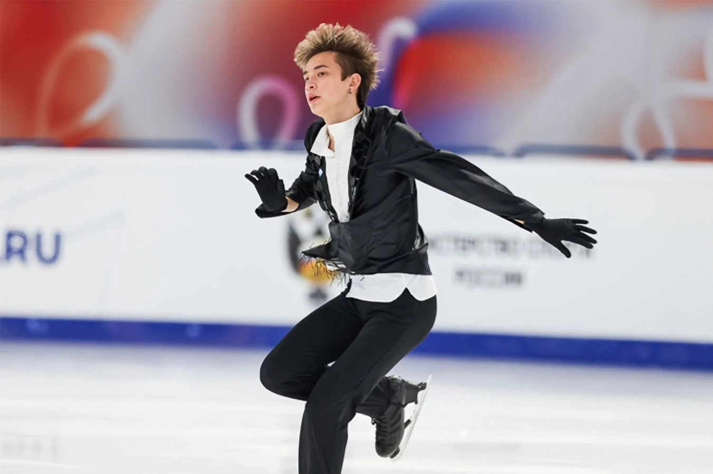
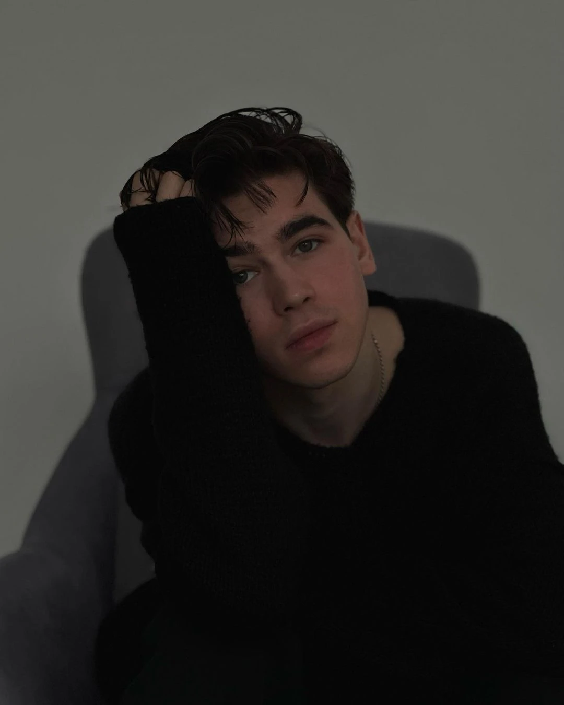
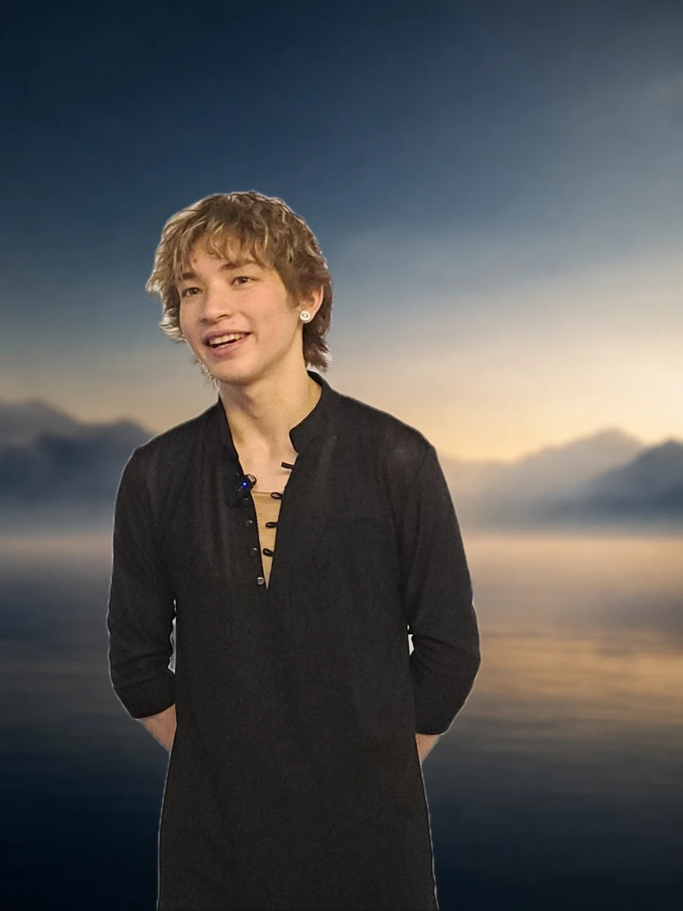

Юниор · КМС · победитель Кубка сильнейших · призёр юниорского Гран-при и московских стартов
2025 / 26
Сначала — сезон, который уже случился
Две программы. Два разных характера.
Прошлый сезон показал не один образ Алдара, а диапазон: от блюзовой пластики до драматичной музыки, ставшей поводом для разговора.

Источник · «Чемпионат»01
Короткая программа · сезон 2025/26
Two Feet You?
Блюзовая пластика, точный ритм и сдержанная дерзость.
Эта программа стала самой устойчивой в сезоне: лидерство после короткой в Магнитогорске, второе место в Красноярске и третья сумма в короткой программе на Первенстве России.
Музыкальный выбор сам стал частью разговора вокруг программы.
Алдар рассказывал, что сначала сомневался в этой версии, но постепенно принял её на льду. С «Кукушкой» он завоевал серебро этапа Гран-при в Магнитогорске.
Работает над качеством ребра, скоростью и свободой движения по льду.
Главный тренер
Екатерина Моисеева
Ведёт спортивную подготовку Алдара и собирает работу штаба в единый процесс.
Хореограф штаба
Ольга Симонова
Отвечает за хореографическую работу и точность движения внутри программ.
Постановщик программ
Артём Федорченко
Ставит программы Алдара и помогает искать для каждой музыки свой сценический язык. Их совместная работа продолжается и в новом сезоне.

Артём Федорченко · личный архив

Личная фотография · фон — авторская интерпретация
Санкт-Петербург · Бурятия
Чувство дома тоже остаётся в движении.
Алдар родился в Санкт-Петербурге, но вместе с семьёй ощущает сильную связь с Бурятией и особенно ценит поддержку оттуда. Он ещё не был на Байкале и мечтает однажды покататься на его льду.